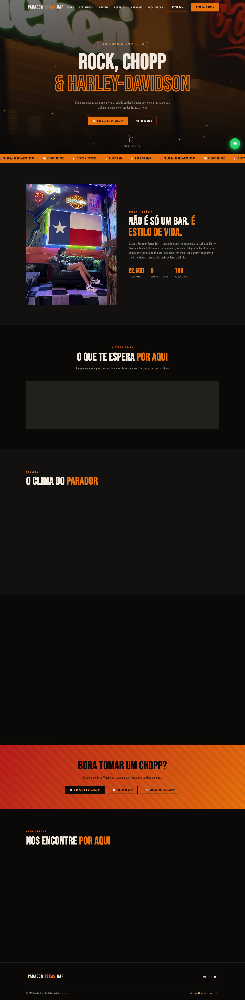
Desenvolvedor que transforma rotina de campo, de clínica e de balcão em software — do modelo de dados à tela que alguém usa no celular.
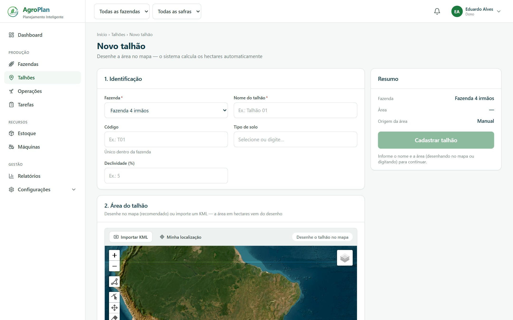
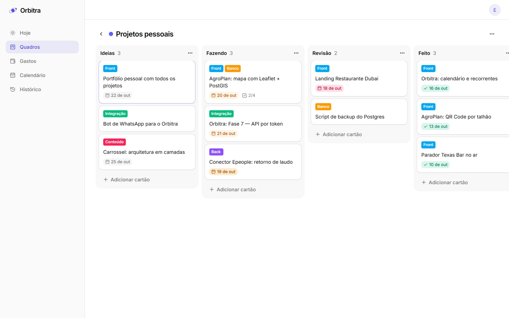
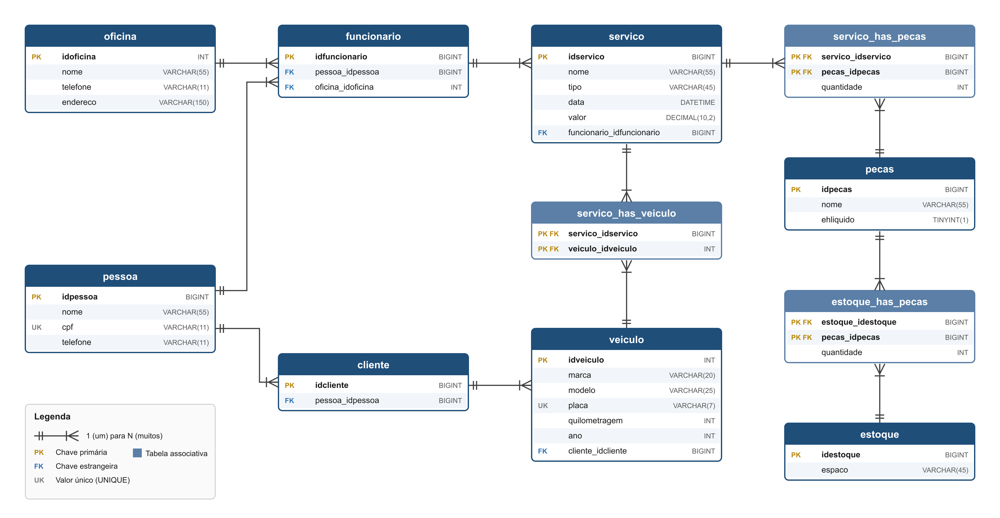
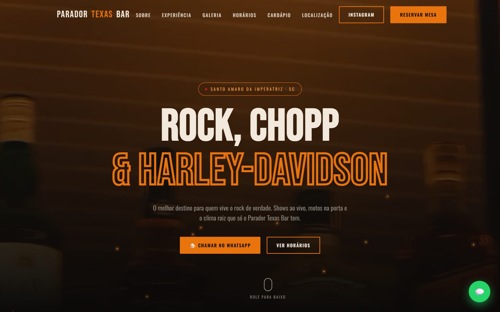
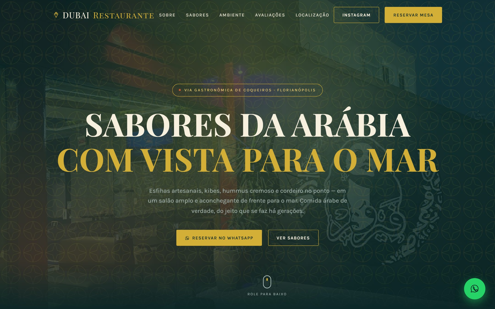
Sistema de gestão agrícola multi-fazenda construído em torno do talhão: cada operação, litro de diesel e saco de adubo vira custo por hectare e histórico rastreável — com QR Code na entrada da área para consultar tudo pelo celular, sem login.
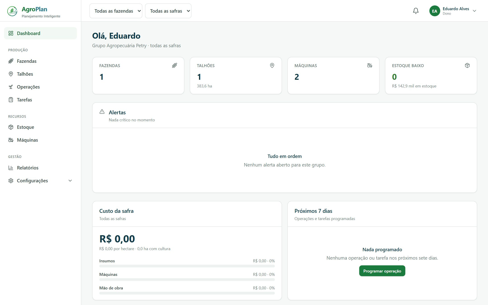
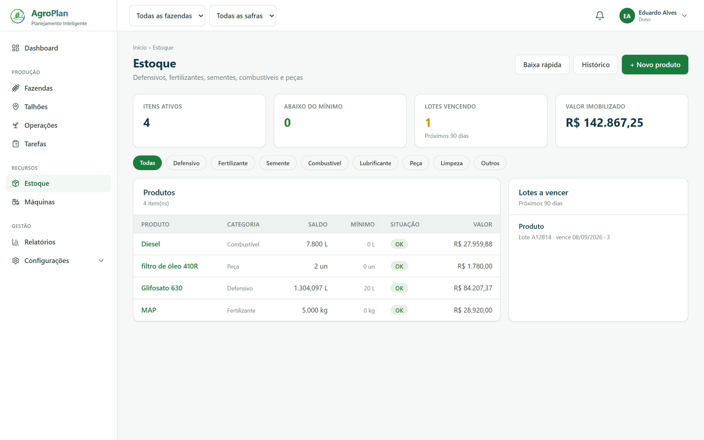
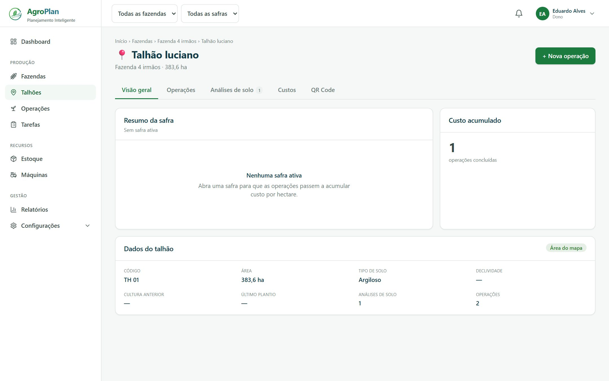
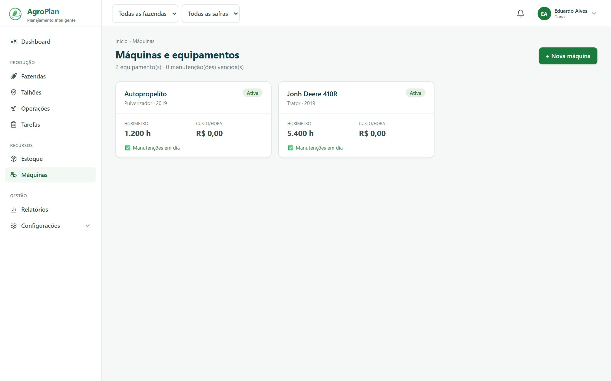
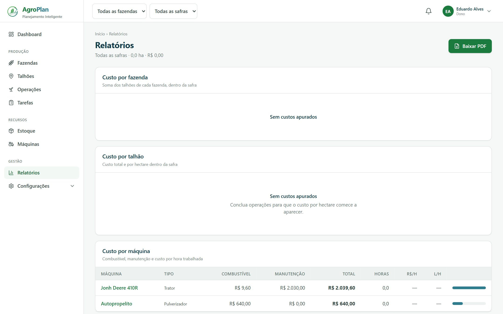
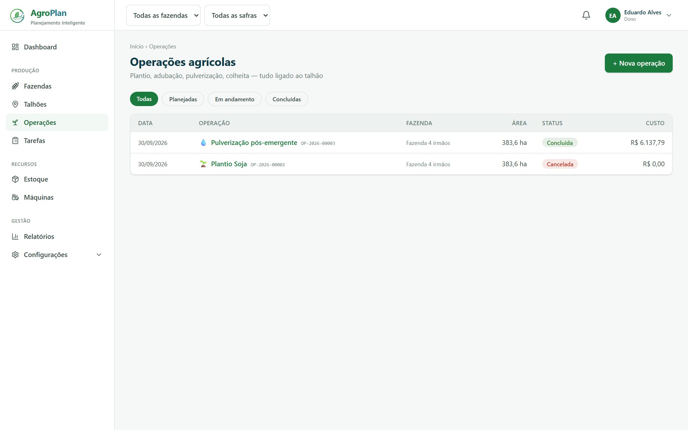
← arraste para ver mais telas · clique para ampliar
O frontend nunca fala com o banco. Regras vivem no domínio; o banco é a barreira final.
Do escritório ao pé da lavoura.
Um lugar só para tarefas, dinheiro e memória. Quadros estilo Trello, controle de gastos com orçamento por categoria e um histórico que registra tudo o que acontece — venha da web, do WhatsApp ou da API.
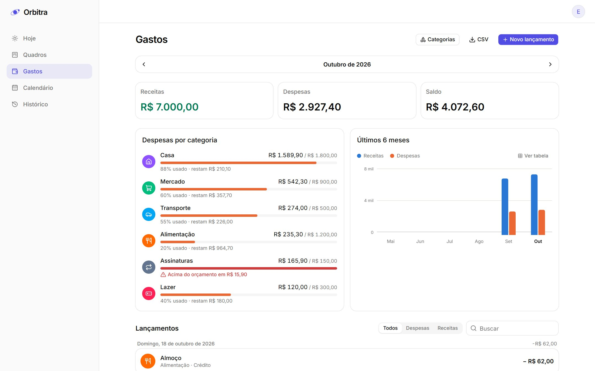
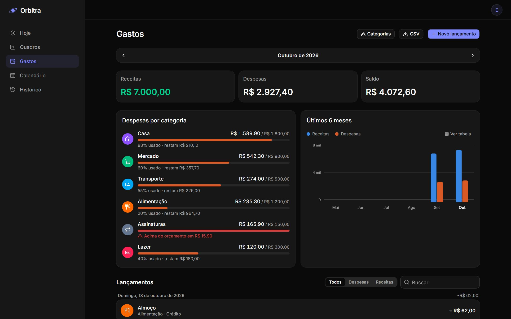
CLAROESCURO↔ arraste para comparar os temas
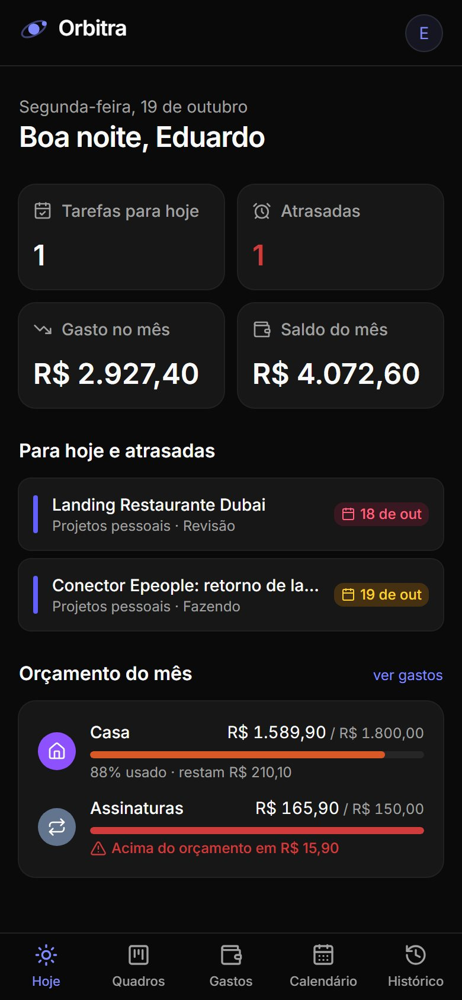
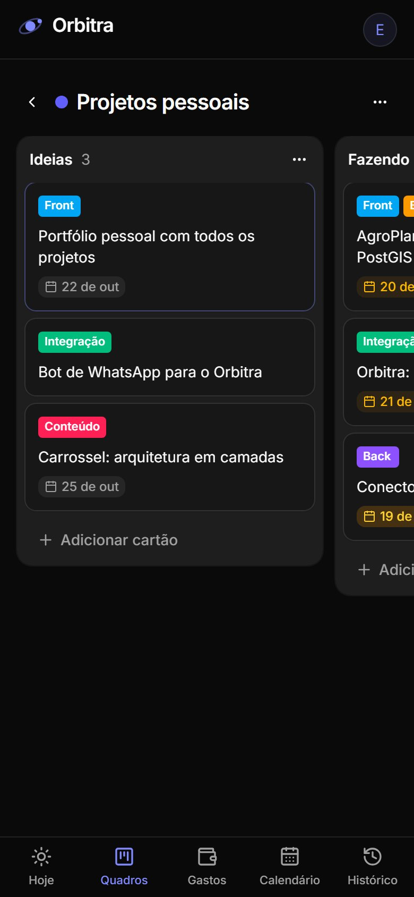
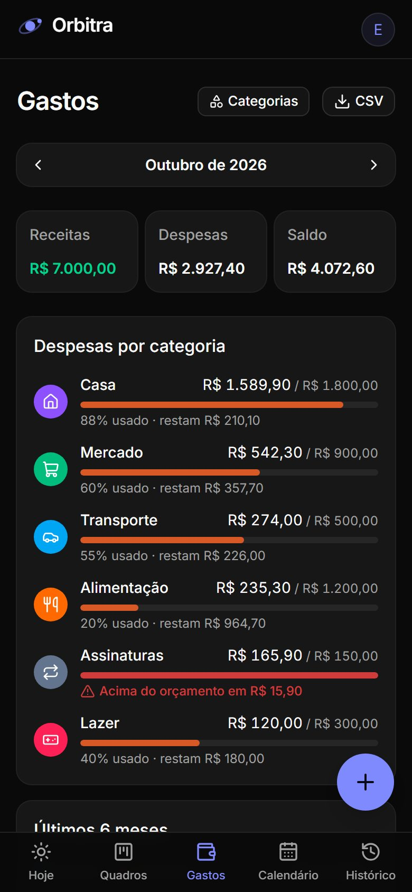
Toda mutação passa por um service que grava o ActivityLog com antes/depois e origem.
Planejado em 7 fases antes do primeiro commit.
archivedAt — histórico sempre íntegro.Na empresa onde trabalho, cada hospital novo exigia alterar o integrador em Delphi. Propus e prototipei um conector configurável: um formato canônico de exame + um arquivo de mapeamento por cliente. Cliente novo vira configuração, não código.
Exemplo ilustrativo do mapeamento (dados fictícios).
Pensado para quem instala, não só para quem programa.
--offline e --simular para validar sem tocar produção.Sites de uma página para bares e restaurantes: identidade própria, reserva direto no WhatsApp, cardápio, galeria, mapa e carregamento rápido — HTML e CSS feitos à mão, sem framework.

passe o mouse sobre o site para rolar a página inteira
Modelagem relacional completa — MER, script SQL e documentação de clientes, veículos, serviços, funcionários e estoque de peças.
Conteúdo técnico para o Instagram, gerado em HTML e exportado em 1080×1350 com Playwright.
Automação com n8n e Meta Cloud API: o produtor fala, o sistema entende e só grava depois de confirmar.
Eu gosto de software que aguenta o mundo real — conexão ruim, regra de negócio estranha, usuário com pressa.
Trabalho com integração de sistemas na área de saúde e, em paralelo, construo meus próprios produtos. Começo pelo papel: documento, modelo os dados e registro cada decisão com o porquê. Depois construo em camadas, para que trocar o banco ou a tela não quebre a regra.
Me importo com segurança desde o início — isolamento por cliente, validação no servidor, nada de segredo no front — e com a experiência de quem vai usar no celular, no meio da lavoura ou do expediente.